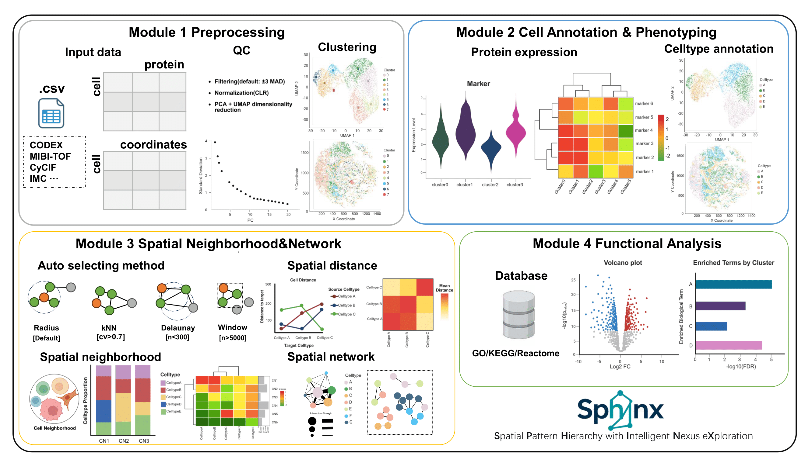

Overview
Sphinx is an R package for spatial
proteomics analysis, providing workflows for:
- Data preprocessing
- Cell annotation
- Spatial neighborhood modeling
- Functional enrichment and visualization
The workflow of Sphinx is summarized as follows:

Module 1. Data Preprocessing: Data import and format standardization Filtering low-quality cells/proteins Normalization and noise reduction Extraction of spatial coordinates;
Module 2. Cell Annotation: Discover cell-type-specific marker proteins UMAP and spatial visualization Automatic or semi-automatic cell type annotation;
Module 3. Spatial Neighborhood&Network: Neighborhood network construction (kNN / Delaunay / radius /window) Calculation of neighborhood features Clustering and spatial visualization Cell-cell interaction analysis;
Module 4. Functional Analysis: Differential protein analysis Cluster-specific pathway enrichment (GO/KEGG/Reactome) Visualization of enrichment results.